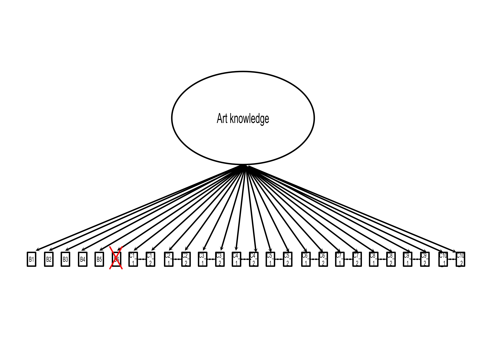

| \(\chi^2\) | \(p\) \(\chi^2\) | CFI | TLI | RMSEA | SRMR |
|---|---|---|---|---|---|
| 401.9 | 0 | 0.876 | 0.845 | 0.123 | 0.062 |
VAIAK CFA multigroup
Introduction
In this document I will present results of the CFA carried on for the data collected with the VAIAK questionnaire.
The VAIAK is a questionnaire composed by two independent and continous scales:
Art Interest (AI) includes 11 items. These are either about subjective interest (e.g., I am interested in art) or behaviors (e.g., I go to visit art exhibitions). Each item is rated on a 7-point Likert scale. Items of subjective interest are rated from “not at all” (1) to “very much” (7), while behavioral items range from “less than once a year” (1) to “once a week or more often” (7).
Art Knowledge (AK) includes 26 items, divided into two parts. In part B (6 items) each item contains an artwork, a question about the image and four possible answers, of which only one is correct. The theme of the questions varies from iconography to techniques and materials. In part C there are 10 images, for each the participant is asked to write the name of the artist and the style (total 26 items).
Participants
The data here used are part of two different databases. The first one (German speakers) was collected by the original author of the VAIAK, and then shared with us. The second one (Italian speakers) is the one collected for the validation process of the Italian version of the VAIAK:
German speakers: 1489 total, 1299 naive, 190 experts
Italian speakers: 537 total, 300 naive, 236 experts
The CFA will be carried on using a multigroup method for the Language variable.
To judge the fit of the model the following criteria will be used: CFI > 0.95, RMSEA < .08, SRMR < 0.08
CFA - Art Interest
AI - Individual groups - One factor model
The first scale controlled is the Art Interest one.
We start by checking the fit of the model for the two groups. We will check the following model.

First we check the Italian population.
Then we check the German-speaking population.
| \(\chi^2\) | \(p\) \(\chi^2\) | CFI | TLI | RMSEA | SRMR |
|---|---|---|---|---|---|
| 1051.646 | 0 | 0.899 | 0.874 | 0.124 | 0.056 |
For neither population the indices of CFI and RMSEA indicate a good fit, thus we proposed a hierachical model instead.
AI - Individual groups - Hierarchical model

First we check the Italian population.
| \(\chi^2\) | \(p\) \(\chi^2\) | CFI | TLI | RMSEA | SRMR |
|---|---|---|---|---|---|
| 252.807 | 0 | 0.927 | 0.907 | 0.095 | 0.053 |
Then we check the German-speaking population
| \(\chi^2\) | \(p\) \(\chi^2\) | CFI | TLI | RMSEA | SRMR |
|---|---|---|---|---|---|
| 502.511 | 0 | 0.954 | 0.941 | 0.085 | 0.043 |
The indices shows a better fit, however not yet acceptable.
AI - Individual groups - Corrected model
As such we explore the modification indices of each groups. In particular here we can present the first five for each group.
The first are Italian-speakers, the second the German-speakers
lhs op rhs mi epc sepc.lv sepc.all sepc.nox
28 interest_subj =~ AI_2_3 68.557 1.137 1.137 0.661 0.661
37 AI_1_1 ~~ AI_1_2 46.518 0.402 0.402 0.341 0.341
91 AI_2_3 ~~ AI_2_4 37.953 -0.494 -0.494 -0.335 -0.335
71 AI_1_5 ~~ AI_1_6 27.904 0.271 0.271 0.286 0.286
40 AI_1_1 ~~ AI_1_5 21.569 -0.298 -0.298 -0.234 -0.234 lhs op rhs mi epc sepc.lv sepc.all sepc.nox
59 AI_1_3 ~~ AI_1_7 105.786 0.683 0.683 0.275 0.275
28 interest_subj =~ AI_2_3 105.326 0.957 0.957 0.477 0.477
71 AI_1_5 ~~ AI_1_6 80.622 0.309 0.309 0.277 0.277
90 AI_2_2 ~~ AI_2_4 61.425 0.333 0.333 0.296 0.296
29 interest_subj =~ AI_2_4 47.404 -0.534 -0.534 -0.315 -0.315The correlations between interest_subj =~ AI_2_3 and AI_1_5 ~~ AI_1_6 are present in both of them.
While the other items of AI_2 indicates very times consuming activities (museum attendence, art events and reading art books), items AI_2_3 measures how much one watch images of art. Thus the items of AI_2 can be understtod as more representative of “insitutional participation” while AI_1 as more general interest, which would explain why the item AI_2_2 has a high correlation.
The items AI_1_5 and AI_1_6 measure very similar behaviour:
AI_1_5: Sono sempre alla ricerca di nuove sensazioni ed esperienze artistiche
AI_1_6: Nel mio quotidiano mi viene naturale prestare attenzione ad oggetti d’arte che trovo affascinanti
We can open the parameters and then check the Italian population
| \(\chi^2\) | \(p\) \(\chi^2\) | CFI | TLI | RMSEA | SRMR |
|---|---|---|---|---|---|
| 163.814 | 0 | 0.957 | 0.943 | 0.075 | 0.04 |
and then the German speaking one
| \(\chi^2\) | \(p\) \(\chi^2\) | CFI | TLI | RMSEA | SRMR |
|---|---|---|---|---|---|
| 327.919 | 0 | 0.971 | 0.962 | 0.069 | 0.036 |
AI - Multigroups
| Model | chi2 | p_chi2 | CFI | TLI | RMSEA | SRMR | Delta_CFI | Delta_RMSEA | Delta_SRMR |
|---|---|---|---|---|---|---|---|---|---|
| configural | 491.7335 | 0 | 0.9682 | 0.9574 | 0.0702 | 0.0341 | NA | NA | NA |
| metric | 539.8361 | 0 | 0.9652 | 0.9579 | 0.0698 | 0.0451 | 0.0030 | 0.0005 | -0.0110 |
| scalar | 931.8644 | 0 | 0.9355 | 0.9291 | 0.0906 | 0.0614 | 0.0297 | -0.0208 | -0.0163 |
To judge the differences I’ll use the following criteria: ΔCFI (< 0.010), and ΔRMSEA (< 0.015).
The results indicate an acceptable fit for the configural model. This means that the basic factor structure is equivalent across the two groups. When adding the equal factor loading constraints across both groups, the model fit has a small and acceptable change. This means that the items have the same weight in both groups. Lastly the scalar model failed in the fit. The difference for the CFI is higher than the acceptable limit. This indicates that there is a difference in the intercepts.
CFA - Art Knowledge
For the AK we carry on the same analysis, using this model

However we will exclude the item B6. This is because the German participants completed the old version of the VAIAK, where item B6 had different possible answers. This was changed after a series of analysis using IRT. The Italian version uses the revised version, the VAIAK-R.
AK - Individual groups
| \(\chi^2\) | \(p\) \(\chi^2\) | CFI | TLI | RMSEA | SRMR |
|---|---|---|---|---|---|
| 543.233 | 0 | 0.928 | 0.918 | 0.044 | 0.046 |
Then we check the German-speaking population.
| \(\chi^2\) | \(p\) \(\chi^2\) | CFI | TLI | RMSEA | SRMR |
|---|---|---|---|---|---|
| 1132.546 | 0 | 0.906 | 0.893 | 0.047 | 0.039 |
AK - Multigroups
| Model | chi2 | p_chi2 | CFI | TLI | RMSEA | SRMR | Delta_CFI | Delta_RMSEA | Delta_SRMR |
|---|---|---|---|---|---|---|---|---|---|
| configural | 1675.779 | 0 | 0.912 | 0.901 | 0.046 | 0.040 | NA | NA | NA |
| metric | 2255.108 | 0 | 0.870 | 0.859 | 0.055 | 0.077 | 0.043 | -0.009 | -0.038 |
| scalar | 3495.664 | 0 | 0.776 | 0.768 | 0.071 | 0.100 | 0.093 | -0.016 | -0.022 |
To judge the differences I’ll use the following criteria: ΔCFI (< 0.010), and ΔRMSEA (< 0.015). The results indicates that the configural model has a good fit. The metric model has, instead, a difference for the CFI higher than the acceptable limit. This means that the different items have a different factor loading across the groups.
AK - Factor loadings
A major difference in terms of fittings seems to happen after checking the model with the same factor loadings. Thus we explore the difference between the the German and Italian speakers.
# A tibble: 25 × 6
lhs rhs `1` `2` diff flag
<chr> <chr> <dbl> <dbl> <dbl> <lgl>
1 knowledge B1_Numeric 0.200 0.361 -0.160 TRUE
2 knowledge B2_Numeric 0.212 0.376 -0.164 TRUE
3 knowledge B3_Numeric 0.416 0.464 -0.0480 FALSE
4 knowledge B4_Numeric 0.281 0.343 -0.0617 FALSE
5 knowledge B5_Numeric 0.242 0.292 -0.0506 FALSE
6 knowledge C1_1_Numeric 0.524 0.265 0.259 TRUE
7 knowledge C1_2_Numeric 0.481 0.591 -0.110 FALSE
8 knowledge C2_1_Numeric 0.647 0.566 0.0819 FALSE
9 knowledge C2_2_Numeric 0.540 0.516 0.0240 FALSE
10 knowledge C3_1_Numeric 0.403 0.226 0.177 TRUE
11 knowledge C3_2_Numeric 0.275 0.304 -0.0289 FALSE
12 knowledge C4_1_Numeric 0.408 0.424 -0.0158 FALSE
13 knowledge C4_2_Numeric 0.628 0.633 -0.00495 FALSE
14 knowledge C5_1_Numeric 0.484 0.505 -0.0212 FALSE
15 knowledge C5_2_Numeric 0.614 0.606 0.00771 FALSE
16 knowledge C6_1_Numeric 0.536 0.433 0.103 FALSE
17 knowledge C6_2_Numeric 0.607 0.419 0.188 TRUE
18 knowledge C7_1_Numeric 0.442 0.566 -0.124 FALSE
19 knowledge C7_2_Numeric 0.579 0.614 -0.0344 FALSE
20 knowledge C8_1_Numeric 0.557 0.484 0.0721 FALSE
21 knowledge C8_2_Numeric 0.542 0.636 -0.0947 FALSE
22 knowledge C9_1_Numeric 0.615 0.659 -0.0443 FALSE
23 knowledge C9_2_Numeric 0.558 0.637 -0.0790 FALSE
24 knowledge C10_1_Numeric 0.538 0.509 0.0287 FALSE
25 knowledge C10_2_Numeric 0.588 0.528 0.0597 FALSEThe column flag indicated differences (absolute) higher than 0.15.
AK contain 16 images. 5 of these represent an Italian artwork, for a total of 7 items: B1, B4, B5, C2_1, C2_1, C5_1, C5_2.
When checking what Italian items have a difference over 0.15, only B1 appears.
So, it seems reasonable to say that the difference in terms of factor loadings cannot be explained by the “Italianity” of certain items.
Conclusion
When presented with adjusted model, both the AI and AK scales show a good configural invariance.
For the AI scale, the Metric Invariance seems to be stable until the scalar model. It seems that the the groups have a different in terms of intercepts, which could be caused by the larger percentage of lay people in the German group.
For the AK scale we can notice a unsufficient fit already with the metric model. This indicates a difference in the factor loadings. This may be cause by different reason. In this case one possibility (the possible facilitating nature of the Italian items) was tested. However this first possibility doesn’t seem to be sustain by the analysis. A second possibility may be also caused by the larger proportion of the lay people. As claimed in Specker (2020) it may be understandable that an item is more influential in a group than another. For example an item may be very important for the final score of lay people, but too easy, and as such not that relevant, for the expert group.
However what this analysis show is that the configurial model is fit. Thus the comparison between the two groups is acceptable.